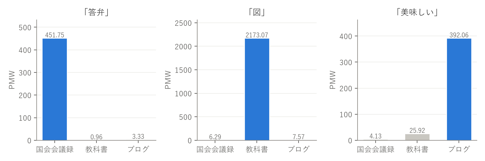
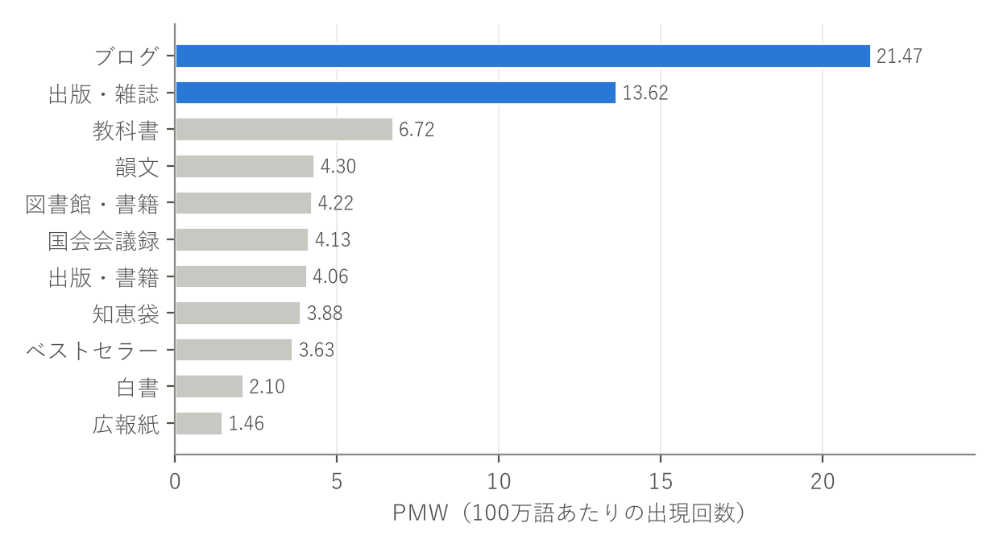
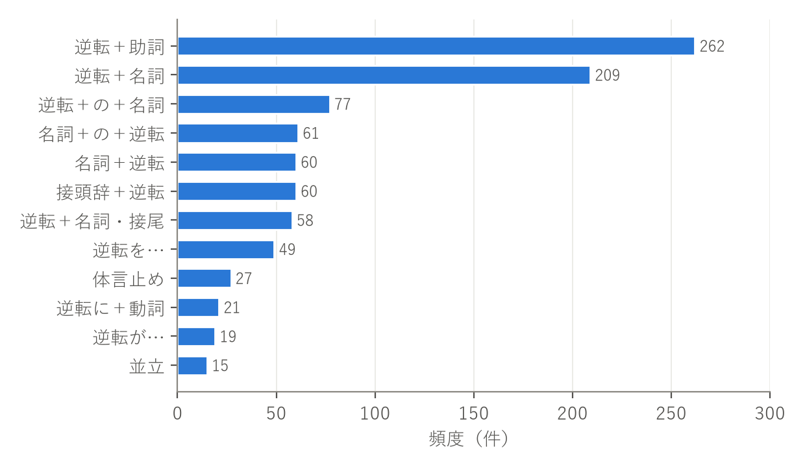
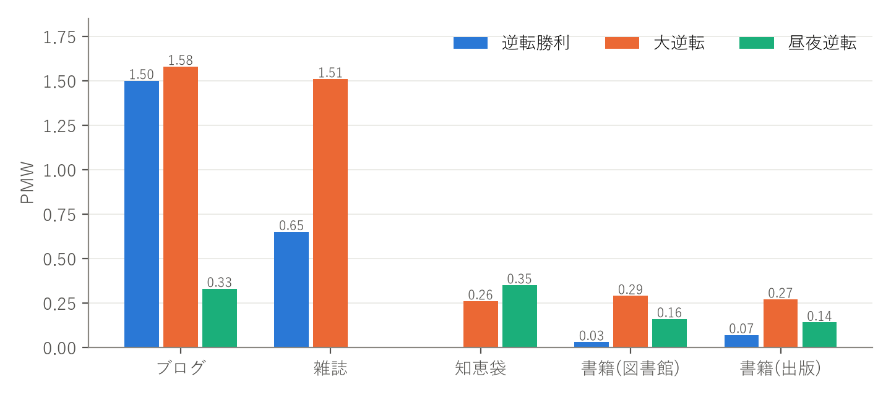

国立国語研究所の「現代日本語書き言葉均衡コーパス（BCCWJ）」を検索できるツール NINJAL-LWP for BCCWJ（以下 NLB）を用いた。調査対象のジャンルは、国会会議録・教科書・ブログの3つとした。
まず、各ジャンルの文章の性質から、そのジャンルで特に多く使われそうな単語を予想した。国会会議録では質疑応答に関わる語（「答弁」）、教科書では図表を参照する語（「図」）、ブログでは個人の感想を表す語（「美味しい」）を候補とした。次に、NLB でそれぞれの単語を検索し、「基本」タブに表示されるサブコーパス別の頻度と PMW（Per Million Words：100万語あたりの出現回数）を記録した。
サブコーパスごとに総語数が大きく異なるため、比較には頻度そのものではなく PMW を用いた。対象ジャンルの PMW が他の2ジャンルの PMW よりも高ければ、条件を満たすと判定した。
3ジャンルの PMW を表1と図1に示す。3語とも予想したジャンルでの PMW が最も高く、条件を満たした。
| 課題 | 単語 | 国会会議録 | 教科書 | ブログ | 2位との比 |
|---|---|---|---|---|---|
| a) 議事録で高い | 答弁 | 451.75 | 0.96 | 3.33 | 約136倍 |
| b) 教科書で高い | 図 | 6.29 | 2173.07 | 7.57 | 約287倍 |
| c) ブログで高い | 美味しい | 4.13 | 25.92 | 392.06 | 約15倍 |

参考として、3ジャンル以外も含めた全サブコーパスの値を表2に示す。
| サブコーパス | 答弁 | 図 | 美味しい | |||
|---|---|---|---|---|---|---|
| 頻度 | PMW | 頻度 | PMW | 頻度 | PMW | |
| 出版・書籍 | 91 | 3.10 | 11584 | 394.94 | 1597 | 54.45 |
| 出版・雑誌 | 16 | 3.46 | 683 | 147.64 | 529 | 114.35 |
| 図書館・書籍 | 101 | 3.21 | 4986 | 158.33 | 1518 | 48.20 |
| ベストセラー | 33 | 7.99 | 205 | 49.63 | 211 | 51.08 |
| 知恵袋 | 7 | 0.62 | 103 | 9.09 | 2775 | 244.93 |
| 法律 | 34 | 36.24 | — | — | 0 | 0 |
| 国会会議録 | 2298 | 451.75 | 32 | 6.29 | 21 | 4.13 |
| 広報紙 | 4 | 0.97 | 90 | 21.91 | 291 | 70.83 |
| 教科書 | 1 | 0.96 | 2264 | 2173.07 | 27 | 25.92 |
| 韻文 | — | — | 3 | 12.90 | 4 | 17.20 |
| 白書 | 2 | 0.42 | 2629 | 551.58 | 13 | 2.73 |
| ブログ | 40 | 3.33 | 91 | 7.57 | 4712 | 392.06 |
「答弁」（国会会議録）：「答弁」は、議員の質問に大臣や政府委員が答えるという、国会の手続きそのものを表す語である。そのため、国会会議録での PMW（451.75）は他ジャンルの100倍以上と際立って高かった。2番目に高いのは法律（36.24）で、国会法などの条文に「答弁」が手続きとして書かれているためと考えられる。一方、教科書（0.96）やブログ（3.33）では、国会を話題にするとき以外はほとんど使われない。特定の制度や場面に結びついた専門的な語ほど、出現するジャンルが極端に偏るといえる。
「図」（教科書）：教科書では「図1を見なさい」のように、本文から図を参照する表現がよく使われる。また算数や数学の図形の単元でも「図」が多用されるため、PMW は2173.07と非常に高くなったと考えられる。2番目に高いのは白書（551.58）で、白書も統計の図表を多く載せ、本文から「図」として参照する文書である。つまり「図」の頻度は、話題よりも「図表を伴う説明的な文章」という文書の形式に左右されていると考えられる。図表をほとんど使わない国会での発言（6.29）やブログ（7.57）では低かった。
「美味しい」（ブログ）：「美味しい」は話し手の主観的な評価を表す形容詞である。食事や旅行など、個人の体験を書くことが多いブログでは PMW が392.06と最も高かった。2番目は知恵袋（244.93）、3番目は雑誌（114.35）で、どれも個人の体験・感想や、飲食店・料理の紹介を含むジャンルである。これに対し、客観性が求められる国会会議録（4.13）、白書（2.73）、法律（0）ではほとんど使われていない。主観的な評価語は、書き手の個人的な視点が出やすいジャンルに偏ると考えられる。ただし、ブログの値は2位との比が約15倍で、他の2語ほど極端な偏りではない。「美味しい」は日常的な語なので、教科書（国語の文章など）にもある程度は現れるためと考えられる。
PMW を用いる意味：頻度とPMWから各サブコーパスの総語数を逆算すると（頻度÷PMW×100万）、国会会議録は約509万語、教科書は約104万語、ブログは約1,202万語となり、規模が10倍以上違う。たとえば教科書での「図」の頻度（2,264件）は、ブログでの「美味しい」の頻度（4,712件）の半分以下だが、PMW では「図」の方が5倍以上高い。規模の違うジャンルを比べるには、頻度そのものではなく PMW のように正規化した値を使う必要があることを確認できた。一方で、教科書は規模が小さいので、教科書での「答弁」（1件）のような低頻度の値は、偶然の影響を受けやすい点にも注意が必要である。
調査する単語として「逆転」を選んだ。「逆転」は、スポーツの試合展開、生活リズム、政治、裁判など、さまざまな場面で使われる語である。そのため、構文パターンや文章ジャンルによって使われ方に違いが出ると予想した。
NLB で「逆転」（名詞）を検索し、次の手順で調査した。
(a) ジャンル別の出現頻度：「逆転」の全体の頻度は677件である。PMW はブログ（21.47）が最も高く、次が雑誌（13.62）だった。それ以外のジャンルは1.5〜7程度にとどまった（図2）。

(b) 構文パターン：「逆転＋助詞」（262件）が最も多く、次が「逆転＋名詞」（209件）だった。「接頭辞＋逆転」と「名詞＋逆転」もそれぞれ60件あり、「逆転」は複合語の一部として使われることが多い（図3）。

(c) 各パターンの主なコロケーション：4つのパターンについて、頻度の高いコロケーションを表3に示す。
| パターン（件数） | 主なコロケーション（頻度／MI） |
|---|---|
| 逆転＋助詞（262） | 逆転の 82／2.85、逆転を 44／2.67、逆転に 30／1.96、逆転が 25／1.99、逆転で 19／2.68 |
| 逆転＋名詞（209） | 逆転勝利 24／12.12、逆転負け 23／12.96、逆転劇 22／12.24、逆転裁判 21／10.74、逆転現象 20／10.90、逆転さよなら 19／15.37、逆転優勝 12／11.33、逆転無罪 6／12.69、逆転発想 6／10.29 |
| 接頭辞＋逆転（60） | 大逆転 48／11.15、再逆転 10／10.56、およそ逆転 1、急逆転 1 |
| 名詞＋逆転（60） | 昼夜逆転 17／16.22、形勢逆転 9／16.27、保革逆転 4／18.40、追い込み逆転 4／15.29、一打逆転 3／17.13、与野党逆転 2、立場逆転 2 |
また、「逆転＋名詞」のコロケーションを意味の分野ごとにまとめると、表4のようになった。
| 分野 | コロケーション（頻度） | 合計 |
|---|---|---|
| スポーツ・勝負 | 勝利24、負け23、さよなら19、優勝12、KO4、ホームラン3、ゴール2、2ラン1、満塁1 | 89 |
| 裁判・法律 | 裁判21、無罪6、判決5、勝訴5、有罪4、検事2、裁決2 | 45 |
| 現象・発想など | 劇22、現象20、発想6 | 48 |
(d) 代表的なコロケーションのジャンル別分布：「逆転勝利」「大逆転」「昼夜逆転」のジャンル別 PMW を図4に示す。「逆転勝利」と「大逆転」はブログと雑誌に集中していた。一方、「昼夜逆転」は知恵袋（0.35）とブログ（0.33）でほぼ同じ値だった。

実例の一部を表5に示す。
| コロケーション | 実例 | 出典ジャンル |
|---|---|---|
| 逆転勝利 | やりました〜見事に逆転勝利！！ | ブログ（スポーツ） |
| 大逆転 | 阪神、大逆転サヨナラ勝ち！！ | ブログ（季節） |
| 大逆転 | 起死回生の大逆転に期待！ | 雑誌（家庭／生活） |
| 昼夜逆転 | 完全に昼夜逆転になった生活をどうしたら治せますか？ | 知恵袋（メンタルヘルス） |
| 昼夜逆転 | 昼夜逆転の場合は、昼間良く遊んであげましょう。 | 知恵袋（子育て、出産） |
| 逆転の | 逆転の発想をして下さい。 | 知恵袋（小・中学校、高校） |
| 逆転の | 一発逆転の勝負に出るか？ | ブログ（スポーツ） |
基本の意味と、分野による使い分け：「逆転」の基本の意味は、順序・立場・状態が反対になることである。しかしコロケーションを見ると、どの分野の話題で使われるかによって、何が逆になるのかが異なっていた。スポーツでは勝敗（逆転勝利、逆転負け、逆転さよなら、一打逆転）、裁判では判決（逆転無罪、逆転有罪、逆転勝訴）、政治では議席の多数派（保革逆転、与野党逆転）、生活では昼と夜（昼夜逆転）が逆になる。表4のとおり「逆転＋名詞」の約半数はスポーツ・勝負の分野で、「逆転」は「劣勢から勝つ」という意味で最もよく使われていることがわかる。
ジャンルによる違い：「逆転」全体の PMW がブログと雑誌で高いのは、スポーツの試合結果を報告・応援する記事が多いためと考えられる。実際、「逆転勝利」「大逆転」の実例の多くは、Yahoo!ブログのスポーツ関連の記事だった。また雑誌では「逆転勝利」が0.65なのに対し「大逆転」は1.51と高く、「起死回生の大逆転」のようにスポーツ以外（生活・経済など）の比喩でも使われていた。一方、「昼夜逆転」は知恵袋で最も PMW が高く、実例は「子育て、出産」「メンタルヘルス」のカテゴリが中心だった。生活リズムの悩みを相談する文脈で使われる表現であり、スポーツ系のコロケーションとはジャンルの分布がはっきり異なる。同じ語でも、コロケーションごとに使われやすいジャンルが違うことがわかった。
結びつきの強さ（MI スコア）：「保革逆転」（18.40）、「一打逆転」（17.13）、「形勢逆転」（16.27）、「昼夜逆転」（16.22）、「逆転さよなら」（15.37）は MI スコアが高かった。これらは構成要素がほぼ決まった言い方（定型表現）として使われていると考えられる。特に「逆転さよなら」は、野球の「逆転サヨナラ勝ち／ホームラン」という表現の一部であり、高い MI は特定の分野の定型句であることを反映している。これに対して「逆転の」「逆転を」などの助詞との結合は MI が2〜3程度と低い。助詞はどの名詞にも付くため、「逆転」に特有の結びつきとはいえない。
比喩的な使われ方：「逆転の発想」（「逆転発想」を含む）のように、物理的な順序ではなく考え方が逆であることを表す用法も見られた。知恵袋の「逆転の発想をして下さい」のように、助言や議論の文脈で使われている。また、「逆転裁判」（21件）は判決が逆転するという法律用語としての用法のほか、同名のゲーム作品のタイトルである可能性もある。ブログなどで作品名として多く出現しているとすれば、コーパス上の頻度が実際の法律用語としての使用頻度を上回ることになる。コーパスで語の使われ方を調べるときは、数値だけでなく実例も確認して用法を区別する必要があると考えられる。
まとめ：「逆転」は、「何かが反対になる」という共通の意味を持ちながら、コロケーションによって主に使われる分野とジャンルが異なる語である。NLB でパターン・コロケーション・ジャンル別分布を組み合わせて見ることで、辞書の意味記述だけではわからない、実際の使われ方の偏りを具体的に捉えることができた。